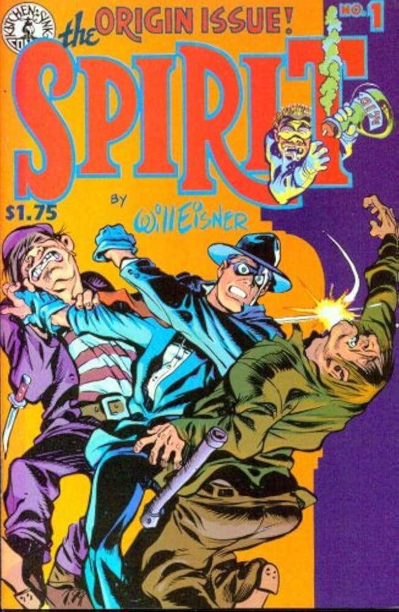
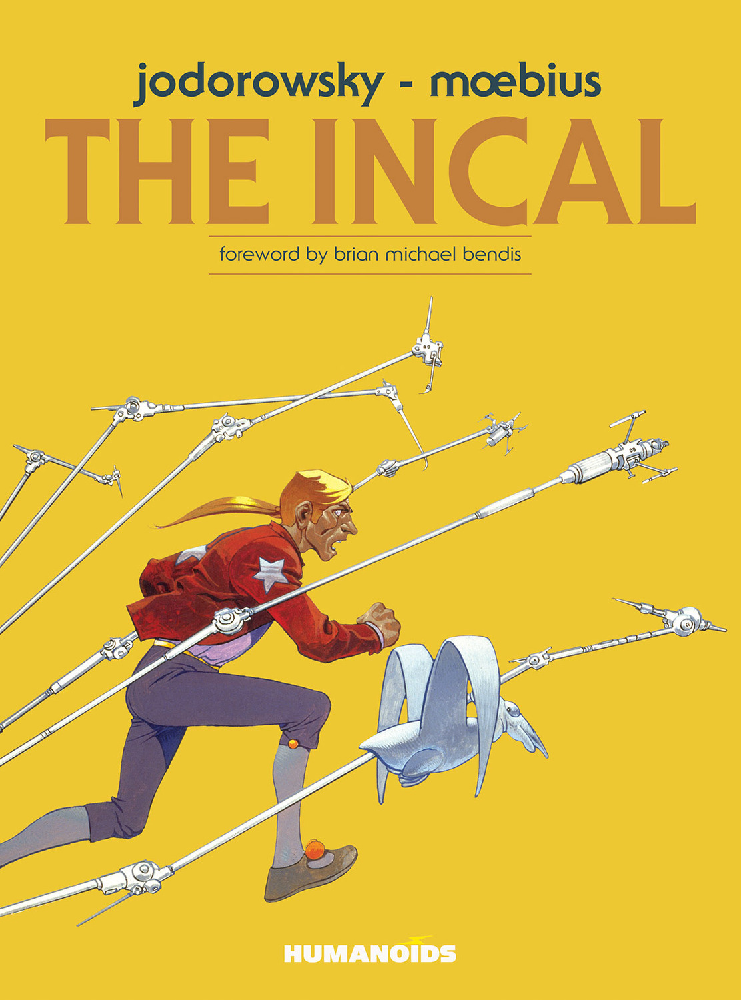
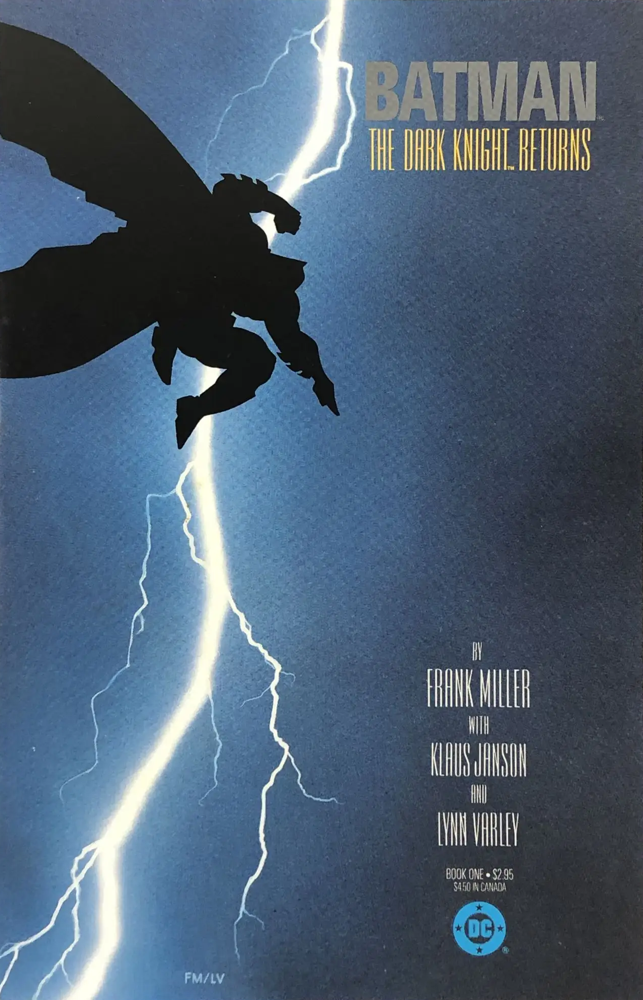
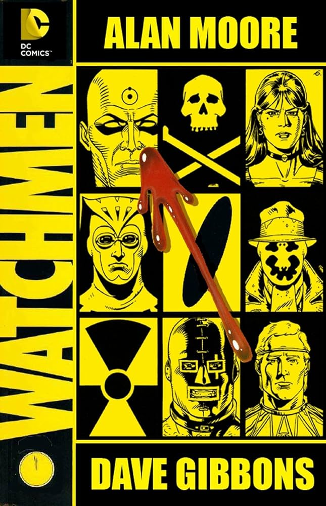
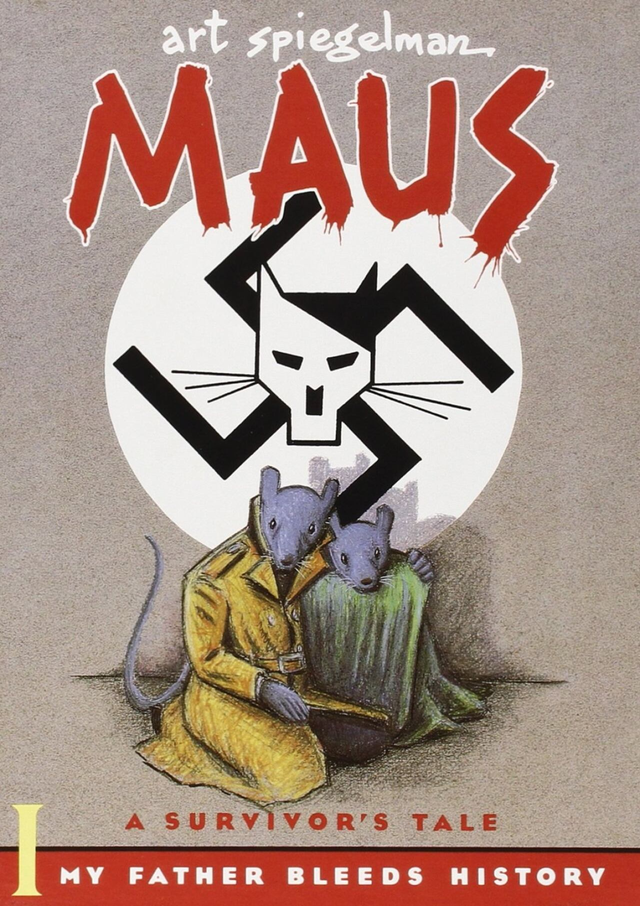
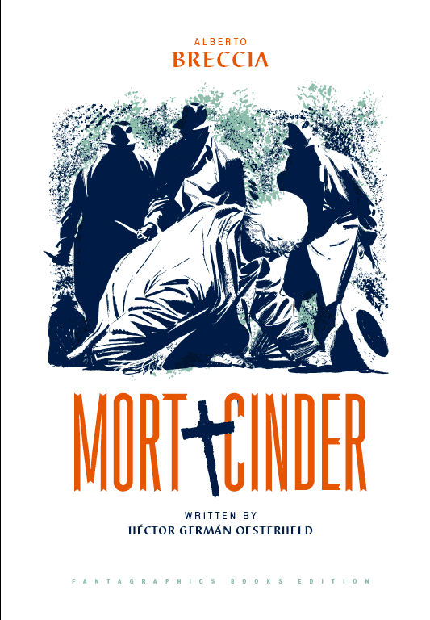
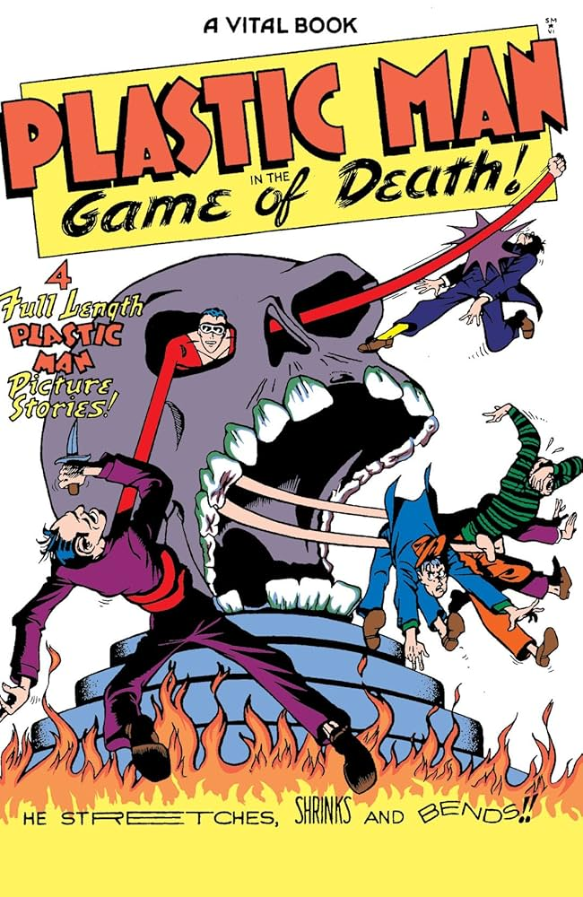

| Imagen de la obra | Nombre de la obra | Autor/a | Año |
|---|---|---|---|
|
Fantastic Four | Jack Kirby | 1961 |
|  | The Spirit | Will Eisner | 1940 |
|
The Adventures of Tintin | Hergé | 1929 |
|
Astro Boy | Osamu Tezuka | 1952 |
|  | The Incal | Moebius | 1980 |
|  | Batman - The Dark Knight Returns | Frank Miller | 1986 |
|  | Watchmen | Alan Moore | 1986 |
|  | Maus | Art Spiegelman | 1980 |
|  | Mort Cinder | Alberto Breccia | 1962 |
|  | Plastic Man | Jack Cole | 1941 |
¡Bienvenidos a la galería de los grandes! Estos son los diez artistas que, personalmente, creo que cambiaron las reglas del juego. Son los verdaderos héroes detrás de las viñetas: desde los genios que nos dieron el chispazo de los superhéroes, como Jack Kirby, hasta los maestros que elevaron el cómic a pura arte y literatura, como Moebius o Spiegelman. Cada nombre en esta tabla es una puerta de entrada a mundos increíbles. ¡Prepárate a descubrir a los gigantes que hicieron que este medio sea tan alucinante!